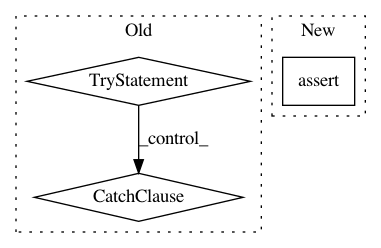

07e28eea3cb0e3d9f1eec7aeee0f2f0630411d57,tensorpack/utils/gpu.py,,get_num_gpu,#,29
Before Change
if code == 0:
output = output.decode("utf-8")
return warn_return(len(output.strip().split("\n")), "Found nvidia-smi. ")
try:
// Use NVML to query device properties
with NVMLContext() as ctx:
return warn_return(ctx.num_devices(), "NVML found nvidia devices. ")
except Exception:
// Fallback
logger.info("Loading local devices by TensorFlow ...")
try:
import tensorflow as tf
// available since TF 1.14
gpu_devices = tf.config.experimental.list_physical_devices("GPU")
except AttributeError:
from tensorflow.python.client import device_lib
local_device_protos = device_lib.list_local_devices()
// Note this will initialize all GPUs and therefore has side effect
// https://github.com/tensorflow/tensorflow/issues/8136
gpu_devices = [x.name for x in local_device_protos if x.device_type == "GPU"]
return len(gpu_devices)
get_nr_gpu = get_num_gpu
After Change
env = os.environ.get("CUDA_VISIBLE_DEVICES", None)
if env:
num_dev = len(env.split(","))
assert num_dev <= nvml_num_dev, \
"Only {} GPU(s) available, but CUDA_VISIBLE_DEVICES is set to {}".format(nvml_num_dev, env)
return warn_return(num_dev, "Found non-empty CUDA_VISIBLE_DEVICES. ")
output, code = subproc_call("nvidia-smi -L", timeout=5)
if code == 0:
In pattern: SUPERPATTERN
Frequency: 3
Non-data size: 3
Instances
Project Name: tensorpack/tensorpack
Commit Name: 07e28eea3cb0e3d9f1eec7aeee0f2f0630411d57
Time: 2020-07-15
Author: ppwwyyxxc@gmail.com
File Name: tensorpack/utils/gpu.py
Class Name:
Method Name: get_num_gpu
Project Name: aleju/imgaug
Commit Name: 2a1bd4c93a998d16516d82893401b346d66a95e9
Time: 2019-07-19
Author: kontakt@ajung.name
File Name: imgaug/dtypes.py
Class Name:
Method Name: get_minimal_dtype
Project Name: ray-project/ray
Commit Name: 8cf598deab3158239e96ae193d1e42315ecb007e
Time: 2020-04-27
Author: nflu@users.noreply.github.com
File Name: python/ray/util/sgd/torch/distributed_torch_runner.py
Class Name: LocalDistributedRunner
Method Name: __init__